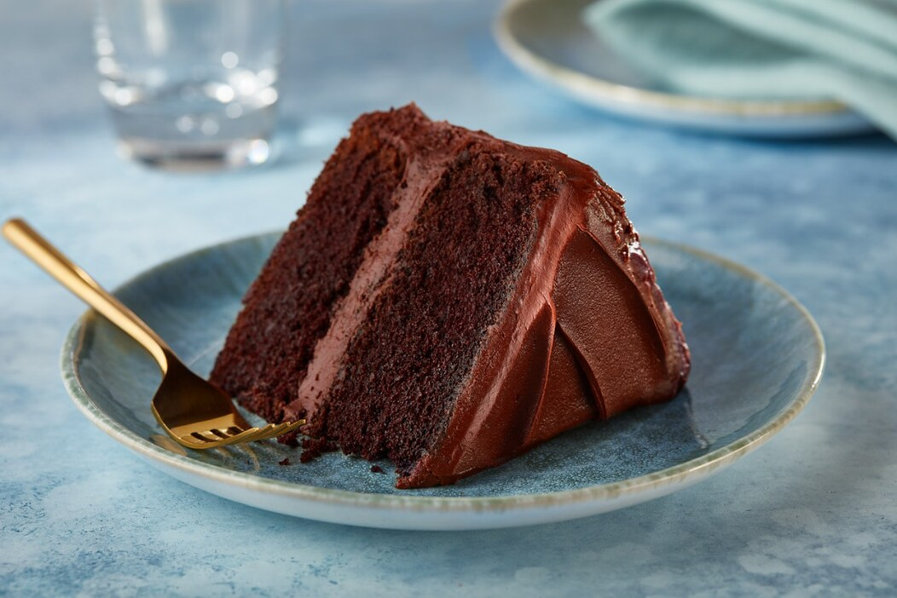

HERSHEY’S “Perfectly Chocolate” Chocolate Cake

Ingredients
- 2 cups sugar
- 1.75 cups of all-purpose flour
- 3/4 cup Hershey's cocoa
- 1.5 tsps baking powder
- 1.5 tsps baking soda
- 1 tsp salt
- 2 eggs
- 1 cup milk
- 0.5 cup vegetable oil
- 2 tsps vanilla extract
- 1 cup boiling water
Directions
- Heat oven to 350°F. Grease and flour two 9-inch round baking pans.
- Stir together sugar, flour, cocoa, baking powder, baking soda and salt in large bowl.
Add eggs, milk, oil and vanilla; beat on medium speed of mixer 2 minutes.
Stir in boiling water (batter will be thin). Pour batter into prepared pans.
- Bake 30 to 35 minutes or until wooden pick inserted in center comes out clean.
Cool 10 minutes; remove from pans to wire racks. Cool completely. Frost with "Perfectly Chocolate" Chocolate Frosting.